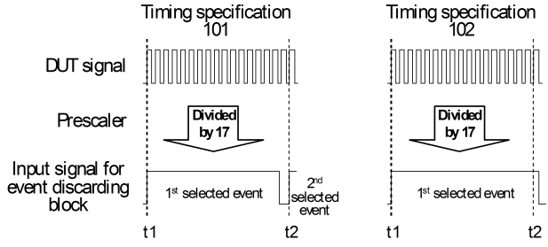

Dealing with very high data rates
The input signal for the event discarding block represents every DUT event that was not suppressed by the prescaler by a short positive pulse. The width of this pulse depends on the primary timing, in particular on the clock resolution and the master clock (for which see Period resolution, clock resolution, and master clock period). Its range is between 5.5 ns and 6.75 ns.
Now with very high data rates, it is possible that the distance between two events as selected by the prescaler is still smaller than the width of the pulse representing the first event. In this case, the second event will not be passed on to the event discarding block, which will invalidate the measurement. The following figure illustrates this for a period measurement:

With specification 101, the distance between two selected events (at t1 and t2) is greater than the pulse width of the input signal for the event discarding block, but with specification 102, it is too small, and therefore the second selected event (at t2) will not be passed on to the event discarding block.
To summarize, the event discarding block requires that the distance between two events as selected by the prescaler is at least greater than 5.5 ns; and you can be sure that the described effect will not occur only if this distance is greater than 6.75 ns.
Possible measures
As long as the prescaler is not set to its maximum value of 16 (17 for event types RISE and FALL), you can try to avoid this problem by increasing the prescaler value (PRESCALER parameter of the TSCF command or setPrescaler() member function of the TMU_PINS test method API). However, if the prescaler is already set to 17 (as in the figure above), the only option is to reduce the data rate, which is defined with the DATA_RATE parameter of TSCF or the setdatarate() member function of TMU_PINS.
You can use the firmware query TSVD? to check if your primary timing and primary TMU set will cause the described problem. If so, TSVD? will return ERROR; otherwise, it will return VALID.
Functional changes
- Introduced in SmarTest 7.1.3
- SmarTest 7.3.4: For Pin Scale SL and 1600 ME, input signal for the event discarding block has a different valid range 5.5 to 6.75ns instead of 3.6 to 4.4ns